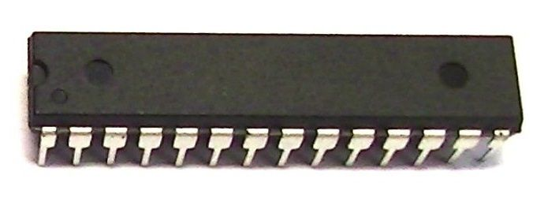

1.マイコンボードに関して
マイコンボードの概要
マイコンボードとは、マイクロコンピュータ（マイコン）と入出力回路などの周辺回路を1枚の基板に乗せ、手軽にマイコンを利用するための回路です。
一昔前は、主に小型・低価格のマイコンを積んだものを指していました。
最近では広義な意味でのマイコンボードとして、ArduinoやRaspberry Piなど、スマートフォンと同様の高性能なCPUを積んでいるものを含みます。
（dotstudioさんより引用：マイコンボード｜dotstudio)
また、多くの種類が世に出ており、wifiやBluetoothが備わっている物もある。
（M5Stackなどが有名。）
加えて、SONYなども多くの機能を搭載した物を世に出している。
・SONY SPRENSENSE：Arduino互換のソニーのボードコンピュータで、ソニー独自のセンシングプロセッサ CXD5602 を搭載しています。
CXD5602 は、GPSによる測位機能、ハイレゾリューションオーディオの再生・録音機能、低消費電力のマルチコアを内蔵したハイパフォーマンスのIoT向けプロセッサです。
（SONY-SPRENSENSEについて 1.はじめに -より引用:Spresense について | SONY）
2.Arudinoに関して
Arudinoの概要
マイコンボードの一つ。（今授業で使う物）
特徴として、Arduino Unoが採用したATmega328P（1）という8ビットAVRマイコンは、初心者でもはんだ付けしやすいDIPパッケージでも供給されている。
（下写真参照）そのため、Ardino Unoでプロトタイピングを行うと、その後ユニバーサル基板などで専用基板化しやすいというメリットがある。

（-京都しなぷすのハード製作記「Arudino Uno」の解説-より引用京都しなぷすのハード製作記「Arudino Uno」の解説)
）
（1）AVR（AVR）は、Atmel社が1996年に開発した、RISCベースの8ビットマイクロコントローラ（制御用IC）製品群の総称である。
2016年以降はMicrochip社によって製造・販売されている。
（Wikipediaより引用：Atmel AVR|Wikipedia)
今回の授業を通して学んだこと、感想
今学期の取り組みは、率直に今年度取り組むものは難しそう/複雑そうだなと言うのが第一印象だった。
とはいえ、同時に好奇心で何処かワクワクした気もする。
今回学んだこととしては、LEDを光らせる「Lチカ」というもので、ここでJAVA言語でのプログラミングであることを知って不安さが増した。
そしてこのLチカという物を行う過程で、「Setup」「loop」「for文」「if文」を学んだ。
後日加えます。。
自分が疑問に思ったこと
第一回課題「正」と「負」の感情について
【正の感情】
・嬉しさ→お礼を言われた時など
・楽しみ→ゲームの発売日とか？
・ワクワク→何かに対する好奇心が生まれた時
・ドキドキ→恋愛において幸せを感じているときなど
・満足感/達成感→満腹になった時やタスクを全て終えた時。
【負の感情】
・苛立ち→人に長時間待たされたり理不尽な目に遭った時
・不安（感）→将来に対して心配になった時など
・悲しみ→人に裏切られた時など
・焦り→何かの期限が間近な時など
・危機感→日程を誤って欠席してしまった時など（この例は滅多にないと思うけど）
グレーだが、
・疲労感⇨体が疲れた時にもう何もしたくなくなる時？